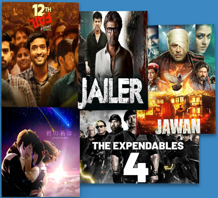
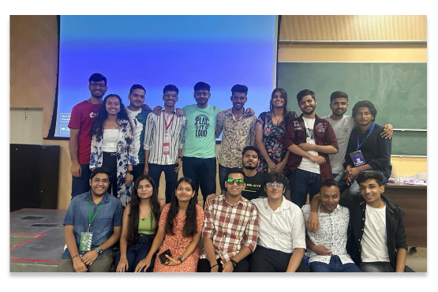

Cinema CLub
A common place for all the movie freaks to discuss their hearts out!
To explore the intricacies of the the cinematic world.
A film is or should be more like music than like fiction. It should be a progression of moods and
feelings. The theme, what's behind the emotion, the meaning, all that comes later?
Events
A common place for all the movie freaks to discuss their hearts out! To explore the intricacies of
the the cinematic world.
A film is or should be more like music than like fiction. It should be a progression of moods
and feelings. The theme, what's behind the emotion, the meaning, all that comes
Movies
We screen some awesome and trending movies based on the choices of IITR junta. Some of the movies
we screened before:

About US
Cinema Club organizes screening of latest movies at Convocation Hall, with a size of around 1800
seats with the best projector in the city. These screenings (which are free of cost, by the way) are
met with much fanfare in a Convo bottled down to its full capacity.
